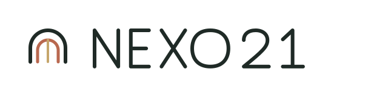

Un ritmo posible
21 días para volver a lo esencial.
Un recorrido educativo cristiano con espacios breves para leer, escribir y conversar.
01
Lee
Un devocional.
02
Escribe
En tu diario.
03
Comparte
Una conversación.

Un recorrido educativo cristiano con espacios breves para leer, escribir y conversar.
Un devocional.
En tu diario.
Una conversación.